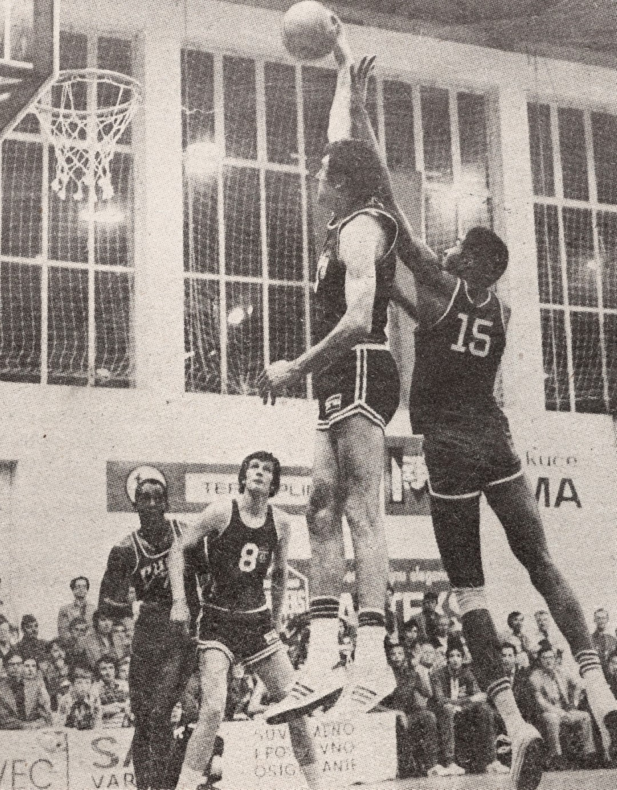
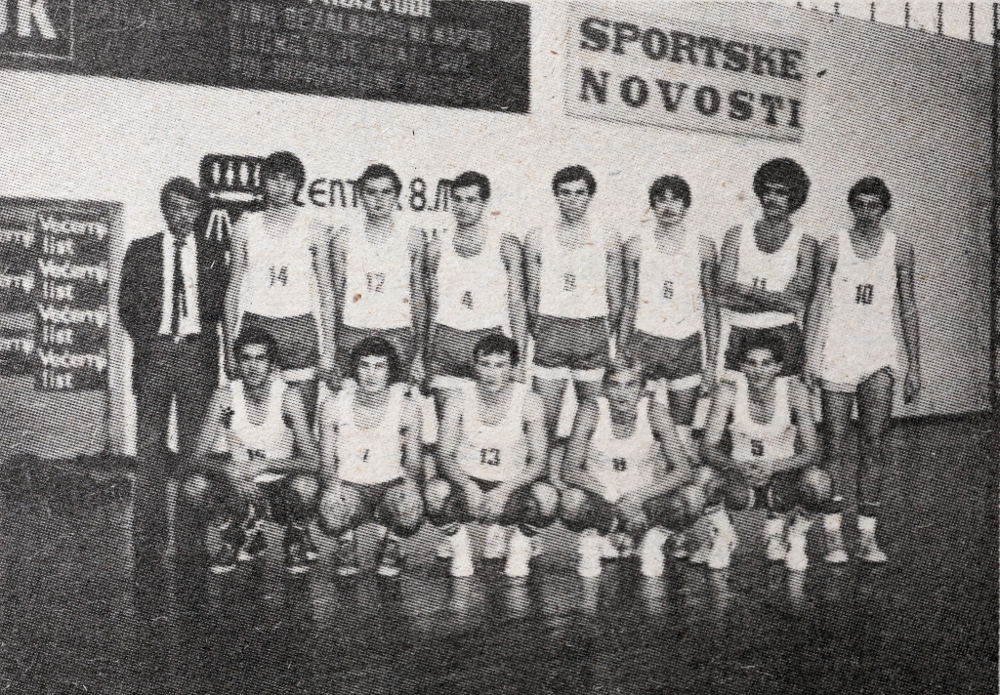

Košarka
KRONOLOGIJA
1928.
u sklopu Sokola u Gombaoni postavljene prve ploče s koševima i uče se pravila košarke
1929.
košarka se igra u Realnoj Gimnaziji
1948.
košarka se počinje igrati pri SD Sloboda
1951.
pod vodstvom S. Žamića košarkaši sele na igralište Srednjoškolac kao sekcija FD Željezničar, igrači su bili pretežito gimnazijalci
1961.
osnovan košarkaški klub Partizan (kasnije mijenja ime u OKK Varaždin, a 1979. u KK Zagorje)
1963.
zimsko otvoreno prvenstvo grada Varaždina
1975.
košarkaški superspektakl Jugoslavija - Kuba


Detalj s utakmice reprezentacija Jugoslavije i Kube., Varaždin, 1975., Varaždinske vijesti, 1979., br. 1792.
1976.
u Varaždinu održana prijateljska košarkaška utakmica između Jugoslavije i SSSR
1979.
KK Zagorje natječe se u središnjoj skupini Hrvatske lige

Košarkaška reprezetacija Varaždina, Varaždin 1979., 106591
1993.
košarkaši MIV-a igraju sezonu 1993./94. u prvoj Hrvatskoj ligi (iste godine ispadaju)